Getting Started
Overview
The Smartsheet Live Data Connector (also known as the Smartsheet ODBC Driver) provides industry-standard connectivity between Smartsheet and third-party analytics tools. It enables business users to interact with and visualize data stored in Smartsheet using business analytics and data visualization software such as Tableau, Spotfire, QlikView / Qlik Sense, Excel and others.
Benefits of using the Live Data Connector include, but not limited to, the following:
- Industry-standard ODBC-based connectivity to Smartsheet. The Connector is compatible with version 3.8 of the ODBC specification.
- Smartsheet-wide access control (ACL) is enforced and data access and retrieval via ODBC is subject to all Smartsheet’s existing security mechanisms.
- Interact with Smartsheet data dynamically, using Smartsheet as a live data source.
- Create charts, graphs and other visualizations with data stored in one or more Smartsheet sheets or reports.
Quick Start
This section provides a fast track to getting you up and running with the Smartsheet Live Data Connector as quickly as possible.
 |
 |
|
| Download the installer | Run the installer | Configure your software |
 |
 |
|
Requirements
In order to use the Live Data Connector you will need:
- Live Data Connector license (included in some plans - see pricing)
- A Smartsheet license
- Microsoft Windows 7, Windows 8, or Windows Server 2012
Additionally, to use the driver you will need access to at least one of these products:
- Tableau Desktop Professional Edition 8.2/8.3/9.x or Tableau Server 8.3.3/9.x
- QlikView 11.2, Qlik Sense 1.1
- Tibco Spotfire Desktop, Server, Web Player 7.0.1+
- Microsoft Excel 2010, 2013, 2016 - Data Connection Wizard, MSFT Query, Power Query
- Microsoft Access 2013 and 2016
Support
If you experience any difficulties, have questions or feature requests, please visit the Smartsheet Help Center.
If you have a technical issue, please provide detailed information on the issue to our Support team at our Support Contact page. To best assist you with the issue, we will likely need the following information:
- Screenshot of the error message
- Exact steps to reproduce the issue
- Attach a copy of logs generated by the Live Data Connector (follow the steps in this section to enable logging.)
Download
Download the most recent installer:
- 32 bit, version 1.3.33 (released October 17, 2016)
- 64 bit, version 1.3.33 (released October 17, 2016)
Configuration
Windows Proxy Configuration (optional)
Some organizations use a proxy server to access web content. If you are using a proxy to access web content, the Smartsheet Live Data Connector will use your proxy server as well. You can check your proxy settings from Internet Options in your Control Panel.
By default the Smartsheet Live Data Connector will use the Windows / Internet Explorer’s proxy settings for the currently logged-in user. You can find more information on overriding proxy settings in the Advanced Options Menu section.
To check your settings, select the Connections tab, and then click on LAN settings at the bottom of the window:

… and if you have a proxy configured, you will see it in your LAN settings (example):

The Smartsheet Live Data Connector will use either the automatic configuration script in the Automatic configuration group box or the proxy server address in the Proxy server group box as valid proxy server configurations.
If the Smartsheet Live Data Connector is running on a Windows Server where it is not impersonating a logged-in user (for example when it is running under the Tableau Server service) only the system default proxy settings will be used. Ask your Network Administrator for more information on configuring Windows Server for proxy access.
Enabling logging (optional)
If you run into any issues with the Connector, we may ask you to send us your log file to help identify and address the problem. Enabling logging simply creates a text file on your computer and logs the Connector activity.
To enable logging, please locate the logging utility by navigating to:
- Start > Programs > Smartsheet Live Data Connector
- Click on Live Data Connector Settings

- Click on Driver Properties
- Check Enable logging
- Click on Folder… to specify the log destination:
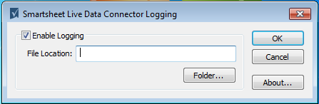
Pick a destination folder and click OK:
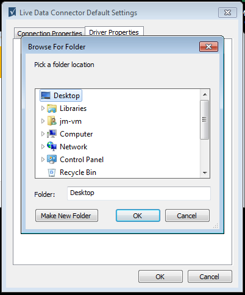
Once the destination is selected, click OK to finish:
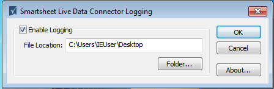
Configuring a Smartsheet DSN (optional)
If you need to set up a Data Source:
- Navigate to Start > Programs > Smartsheet Live Data Connector
- Run ODBC Data Source Admin
Click Add… to add a data source:

Select Smartsheet Live Data Connector and click Finish:
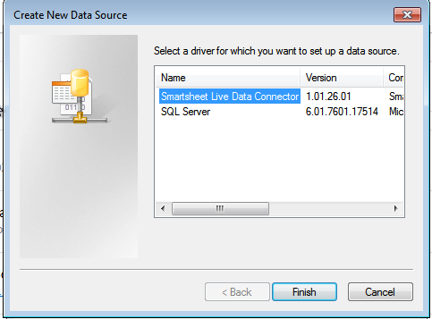
…and then fill in the details. If your Smartsheet account does not permit using email and password for login, you can use the Use API Token for SSO login option instead.

Windows 10
If you are using Windows 10, you may have noticed that the option for the ODBC Data Source Admin in your Start Menu is missing. Please follow the steps below to add the Smartsheet DSN on Windows 10.
On your taskbar, click on the search box and type in Control Panel:

Once the Control Panel opens, click on System and Security:

Scroll down and click on Administrative Tools:

Double click on the appropriate shortcut that matches the driver version you installed (32bit or 64bit):

After that, you’ll see the ODBC Data Source Admin window appear, and you can head back to the previous section to create the Smartsheet DSN.
Advanced Options Menu
The Advanced Options menu provides controls to include additional row metadata, manage data conversion modes, enable driver logging, and manually override proxy settings.
The menu can be accessed either at the time of using the Connector (e.g., from within Tableau):
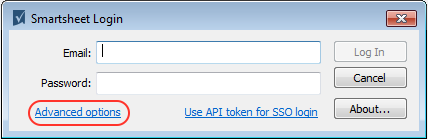
…when setting up an ODBC Data Source:
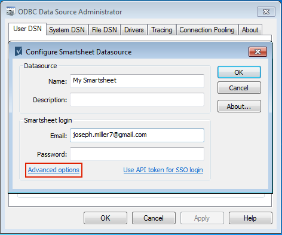
…or by navigating to Start > Smartsheet Live Data Connector > Live Data Connector Settings:
The Advanced Options menu (called Live Data Connector Settings in the Start Menu) has options for including extended metadata (such as Gantt attributes, outline level, and discussions text) as additional columns. It also provides controls for advanced features and logging.

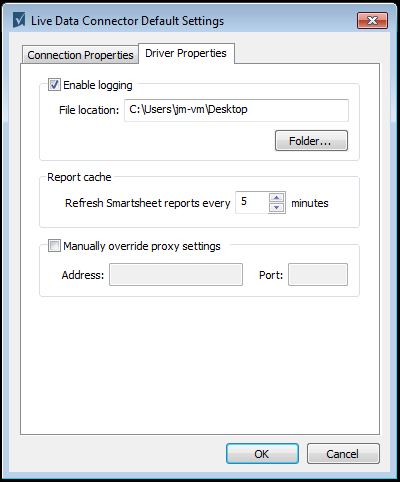
The following tabs and options are available in this menu:
- Connection Properties
- Optional Content - extended metadata as additional columns
- Data retrieval mode
- SQL table names
- Driver Properties
- Enabling logging
- Report cache - auto refresh settings
- Manually Override Proxy Settings
Data retrieval mode has 3 options:
- Always return text - returns all results as text
- Use majority rule - returns numeric results only if more than half the column inputs are numeric, discarding all non-numeric input
- Use entirety rule - returns numeric results only if 100% of the column inputs are numeric, otherwise returns all results as text
The SQL table names section is available to shorten names. By default the full path is appended to the sheet name. Unchecking this option will cause only the sheet/report name to be returned.
Custom SQL Functions (optional)
In the Advanced Options menu, scroll down to the bottom of the Optional content list and you will see an Enable custom SQL functions checkbox:

Checking this option will enable the following SQL functions:
| Function | Tableau Example |
|---|---|
| attachments_count() - returns integer | RAWSQL_INT(‘attachments_count(%1)’,[_Rowlocator]) |
| discussions_count() - returns integer | RAWSQL_INT('discussions_count(%1)’,[_Rowlocator]) |
| discussions_text() - returns text | RAWSQL_STR('discussions_text(%1)’,[_Rowlocator]) |
| parent_id() - returns text | RAWSQL_STR('parent_id(%1)’,[_Rowlocator]) |
| child_ids() - returns text (comma separated values) | RAWSQL_STR('child_ids(%1)’,[_Rowlocator]) |
| outline_level() - returns integer | RAWSQL_INT('outline_levle(%1)’,[_Rowlocator]) |
| sheet_id() - returns text | RAWSQL_STR('sheet_id(%1)’,[_Rowlocator]) |
| sheet_name() - returns text | RAWSQL_STR('sheet_name(%1)’,[_Rowlocator]) |
| predecessor_ids() - returns text (comma separated values) | RAWSQL_STR('predecessor_ids(%1)’,[_Rowlocator]) |
| predecessor_labels() - returns text | RAWSQL_STR('predecessor_labels(%1)’,[_Rowlocator]) |
| duration_seconds() - returns double | RAWSQL_REAL('duration_seconds(%1)’,[_Rowlocator]) |
| workspace_id() - returns text | RAWSQL_STR('workspace_id(%1)’,[_Rowlocator]) |
| workspace_name() - returns text | RAWSQL_STR('workspace_name(%1)’,[_Rowlocator]) |
Column Type Conversion Logic
The connector uses the following logic to process and convert Smartsheet data:
Text/Number: The Text/Number column defaults to the majority rule. This means that numeric values are returned if more than half of the column inputs are numeric. All other values are discarded. This rule can be changed in the Advanced Options section during login.
Date, time, and datetime: Date, time, and datetime columns have a storage class of TEXT, which means they are not converted to a date until a query is ran.
Picklists: Picklists probe for types but they use a precise rule (100%). So, one text string in a list of integers would cause the picklist to display text. All of the state picklists resolve to text (5-State Signal, 6-State Hearts, etc..).
Checkbox: Checkbox (or any on/off column) values are stored as a Boolean and uses an integer storage class. Any text data in a checkbox column would be lost. An exception to this rule would be a list to what equates to Boolean data (on/off, true/false, 0/1) i.e. Stars and Flags. These would be stored in a Boolean and the same rules apply.
Usage
Tableau Desktop
Connect to the Smartsheet Data Source by choosing the To a server > Other Databases (ODBC) option. If you do not see the ODBC option listed here, click on the More Servers… and choose it from the list from additional options:
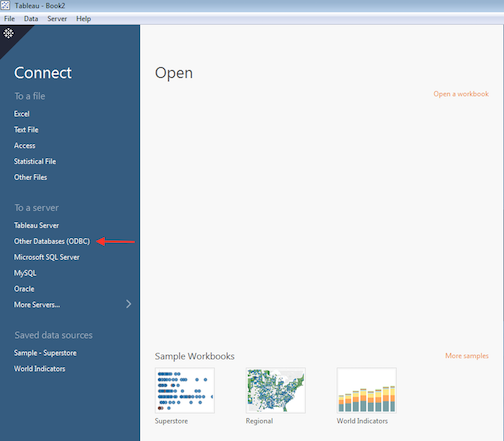
Under Connect Using pick Driver, and then select Smartsheet Live Data Connector from the Driver drop-down menu:
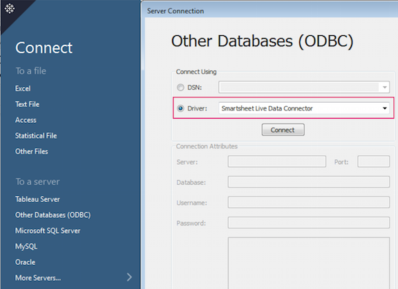
… and click Connect.
Connect using Email Address and Password
Connect to Smartsheet by entering your Smartsheet credentials into the Smartsheet Login dialog box:
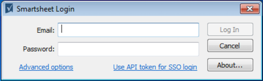
Connect using API Access Token (for SSO users)
First, you need to create a token - it’s easy with just a couple of clicks.
In Smartsheet, navigate to Account > Personal Settings:
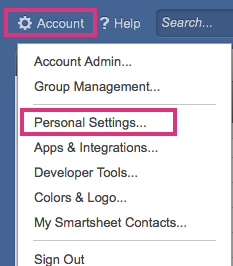
In Personal Settings, select API Access and click on Generate new access token:

Give the new token an arbitrary, descriptive name and click OK:
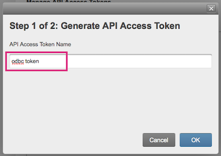

Now go back to your Smartsheet Login window and click on the Use API token for SSO login option:
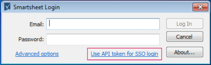
… and paste your access token:

Upon successful login, confirm connection information and click OK:
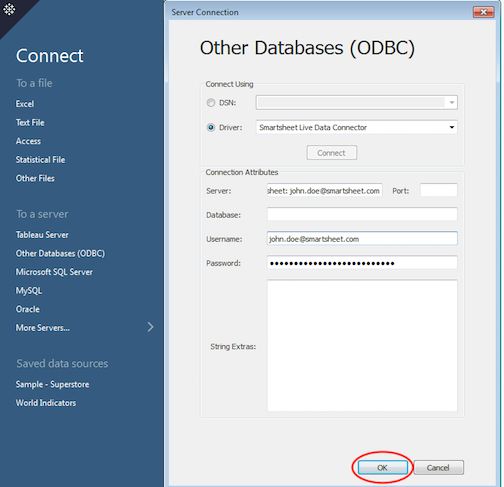
Creating Workbooks and Reports
Browse or search Sheets. You can search by Sheet or Report name, or by any portion of their path (name of parent Workspace or Folder).

Then drag and drop each Sheet or Report you need to the upper right pane:
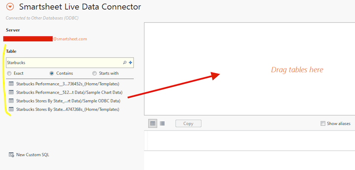
If you are using multiple sheets or reports, and they have columns in common, Tableau will try automatically figure out how to map the selected Sheets and will create a default relationship between them. You can modify the type of relationship (JOIN) at this time.
Once you are done, click Go to Worksheet at the bottom of the application to proceed to the visualization design step:
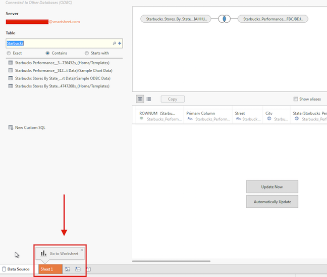
The next step is to design and configure your report:

Finally, use Tableau Dashboard to create a compelling visual representation of the data:
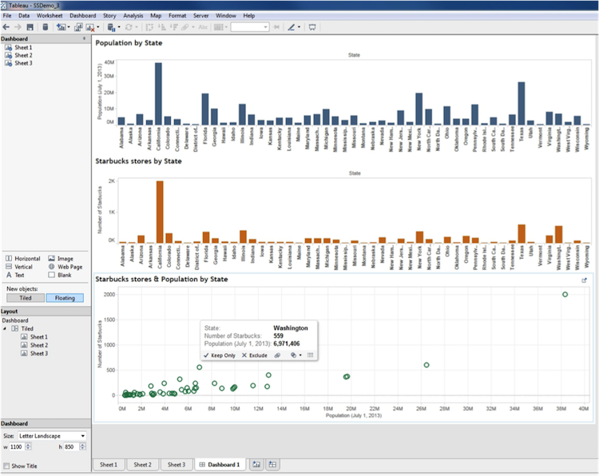
Re-opening Saved Workbooks
Tableau Desktop does not save login credentials by design (for security reasons), so the next time you launch Tableau Desktop and re-open a previously saved workbook, in Tableau 8, you will see an error message:

Click Yes and re-enter your Smartsheet password. Or, if you are using an API Access token to connect, paste the token into the password field instead:

In Tableau 9 you will see a different message, re-enter your login credentials then click OK. Or, if you are using an API Access token to connect, paste the token into the password field instead.
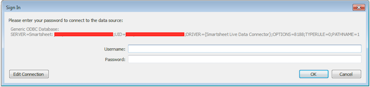
Tableau Server
Installation
The process for installing the Smartsheet Live Data Connector is the same for both server and desktop. You can visit the Download section to find the latest installer packages.
Publishing Workbooks to Tableau Server
A typical Tableau Server workflow starts with creating a workbook / report in Tableau Desktop. Once you create a workbook in Tableau Desktop, you can publish it to a Tableau Server for others to use.
Open the Server menu option and select Publish Workbook…:

If you are not already logged in to your Tableau Server, you will be prompted to do so.
Enter your server:
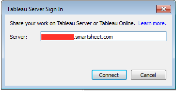
Then enter your login credentials:
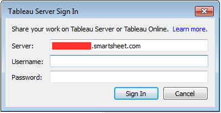
Once logged in, at the next step you will have an opportunity to name the workbook, specify where to save the new workbook on the server, and manage the permissions and access for the published workbook. In terms of access to workbook data, you have two options:
Have users provide their own credentials (which requires they have a Smartsheet login and have permissions in Smartsheet to access the data you included in your workbook).
Access the data you have published without having to provide Smartsheet credentials.
The second option is likely to be the most common one. Tableau Server makes it possible to store your login credentials with your published workbook. To choose this option, click the Authentication… button:

At the next step, you may have to scroll to the right to see the Authentication options:

Finally, in the Authentication dropdown, select Embedded password:

To save and finish, click OK.
Tibco Spotfire Desktop
Spotfire installation instructions can be found here. Additional resources for using Spotfire can be found here.
Launch Spotfire and then navigate to Add Data > Add Data Connection > Other:
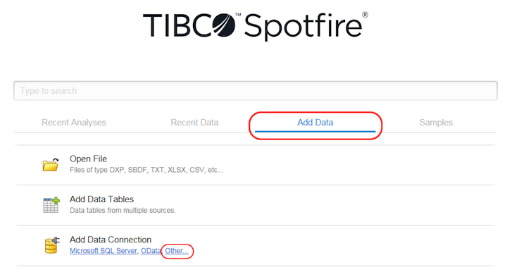
Click on Add then select Database… at the bottom of the list:
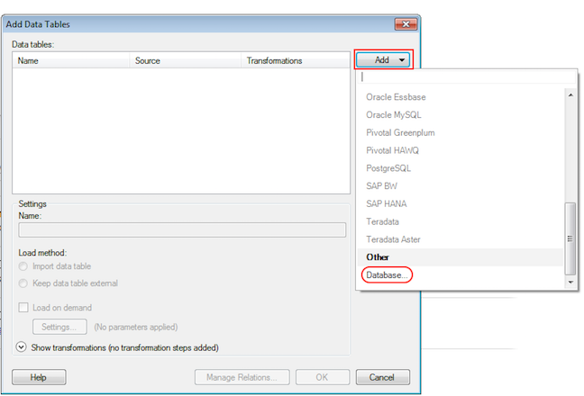
Choose Odbc Data Provider then click Configure…:

Select the DSN you configured earlier. Fill in your Smartsheet credentials to log in. Or, if you are using an API Access token to connect, leave the email field empty and paste the token into the password field instead:

Select a Table and all columns needed, set a Data Source Name, then click OK:

Select the Data table you just set up and click OK to import the data (the Name will be the same as the Data source name you entered in the last step):
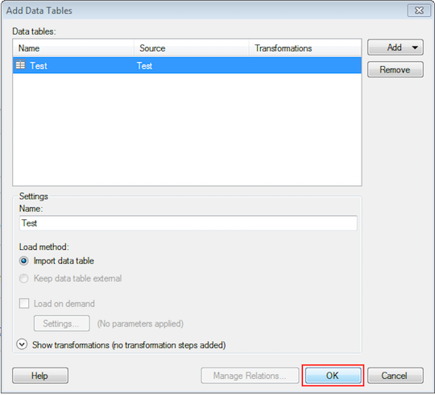
Finally, use Spotfire to create a nice visualization of the data:
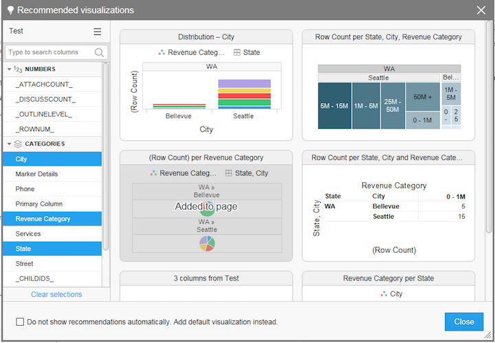
Tibco Spotfire Server
Connect using Email Address and Password
When you open Tibco Spotfire Analyst, you’ll be prompted to log in and select a Server. If you haven’t configured it already, click on Manage Servers…:
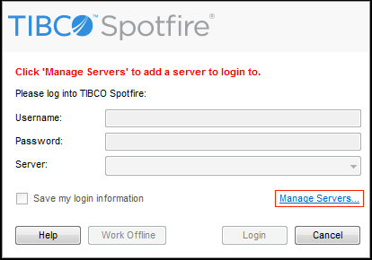
On the Manage Servers window, click on Add:

On the next screen, enter the server address for your Tibco Spotfire server:
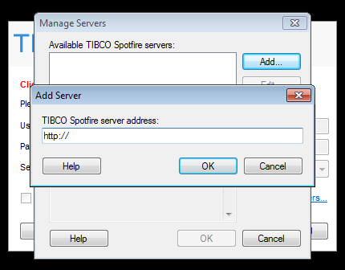
Opening from Spotfire Library
Click on the Add Data tab, then click on Open from Library:

Select a file from the list, then click on Open:

Saving to Spotfire Library
You can save any changes back to the Spotfire library by clicking on File > Save As > Library Item…:

Spotfire Web Player
To access your content on the Spotfire Web Player, you’ll first need to log in:

After logging in, you can view current files uploaded to your Spotfire server. You can also upload files from your computer by clicking on Open analysis:

Then browse for the file on your computer:

Qlik Sense
Open up Qlik then click on Create a new app on the dialog that appears
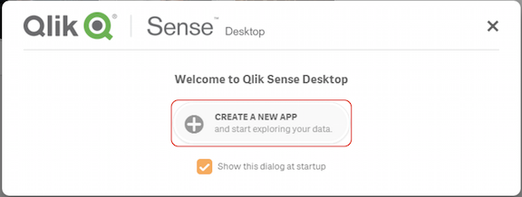
Enter a name for your app and click Create:

Click on Open app:

Click on Add data:

Then click on Connect my data, then click ODBC:

Create a new connection by selecting the DSN you configured earlier. Fill in your Smartsheet credentials to log in. Or, if you are using an API Access token to connect, paste the token into the password field instead:

Select the data you want, then click Load and finish:
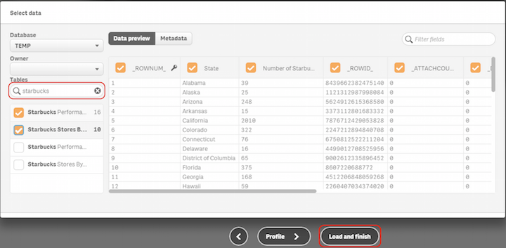
After the data is loaded, click on Close:

Then click on the new data sheet you just created:

Finally, use the data to create your dashboard in Qlik Sense:

QlikView
Open up ClickView and navigate to File > New:

After the Getting Started Wizard: dialog starts, click the X in the upper right-hand corner:

After the dialog is closed, click on File again, then click on Edit Script…:
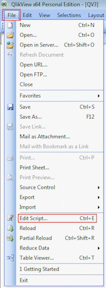
On the next screen, select ODBC in the Database dropdown, then click on Connect… (you can click on Select… as well, they open the same dialog box):

On the next dialog, select the Data Source you set up (If it doesn’t show, click the Show User DSNs checkbox). Fill in your Smartsheet credentials to log in. Or, if you are using an API Access token to connect, paste the token into the password field instead:
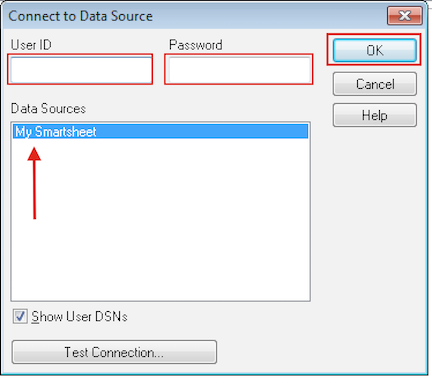
Click on Select:
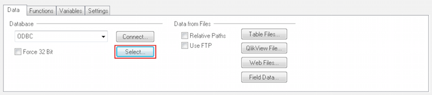
Select the Tables and Columns you would like then click OK:

After you’re finishing adding tables and your script is ready, click OK:

Your data is now loaded, but before you can begin making charts and graphs you’ll need to save your project:

Then you’ll need to start the Chart Wizard:

Click on File > Reload:
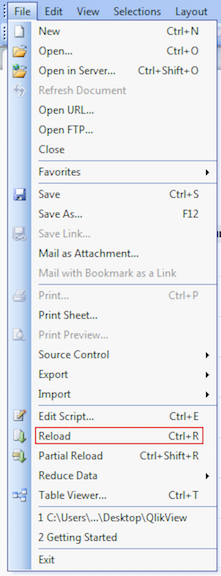
Excel
This section covers the various ways to use the Smartsheet Live Data Connector with Excel.
Excel - Data Connection Wizard
Open the Data Connection Wizard by navigating to Data > Get External Data > From Other Sources:
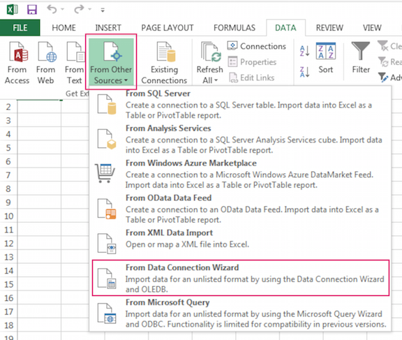
Select ODBC DSN and click Next:
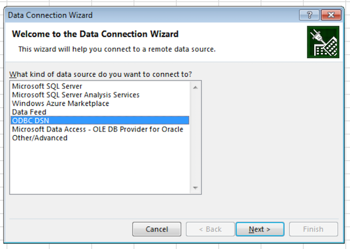
Select the name of the DSN you created earlier, and click Next:

When prompted, fill in your Smartsheet login credentials. If your Smartsheet account requires a single sign-on and you are unable to use email and password for login, you can use the Use API Token for SSO login option instead and paste your API token into the password field:

Once connected to Smartsheet, select your sheet or report and click Finish:
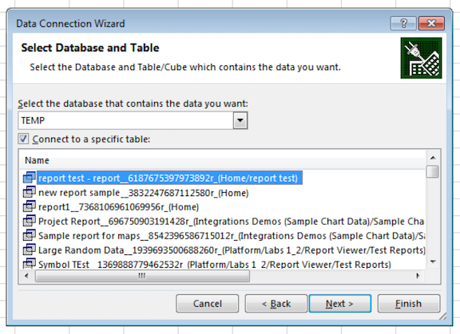
Finally, specify the destination for the imported data:

Excel - Microsoft Query
Once a DSN has been configured, navigate to Microsoft Query by navigating to Data > From Other Sources > From Microsoft Query:
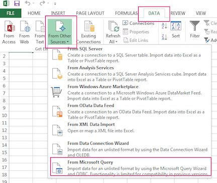
Select the Data Source you created earlier, then click OK:

When prompted, fill in your Smartsheet login credentials. If your Smartsheet account requires a single sign-on and you are unable to use email and password for login, you can use the Use API Token for SSO login option instead and paste your API token into the password field:
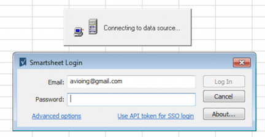
Once connected, select your desired sheets or reports:
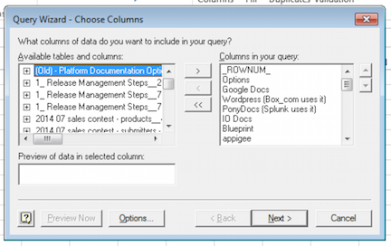
Specify the destination for your data:

Select how you want to view the data:

Saving Credentials
To save credentials, click on the DATA tab, then click on Connections:

Choose the Connection for your query, then click on Properties:
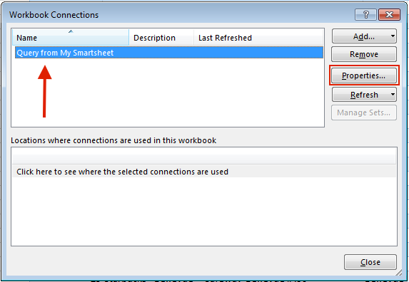
Click on the Definition tab, then check the Save password option.
After you’ve checked the option to save your password, you’ll want to copy the following string to the end of the Connection String (Replacing API_TOKEN with the API access token you generated):
PWD=API_TOKEN
Finally, click on OK:
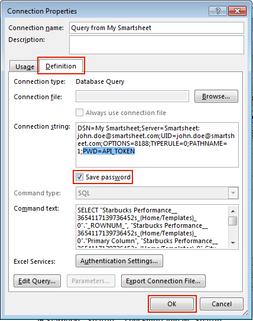

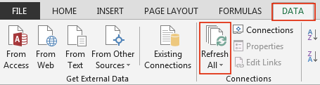
Excel - Power Query
Follow the earlier instructions for Microsoft Query, but instead of returning data to Excel, select View data or edit data query in Microsoft Query:
Once in query editor, click on SQL and copy the SQL statement in the window that opens:
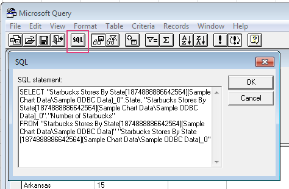
Now, launch Power Query from the main Excel menu and select From other sources > From ODBC:
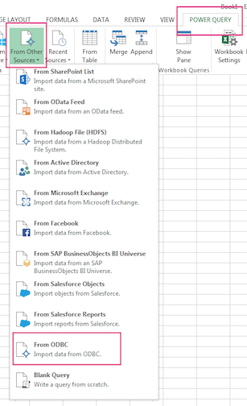
At the next step, paste the string below into Connection string, and paste the query you copied / saved from an earlier step into SQL Statement:
Driver={Smartsheet Live Data Connector}

Finally, enter your Smartsheet credentials when prompted:
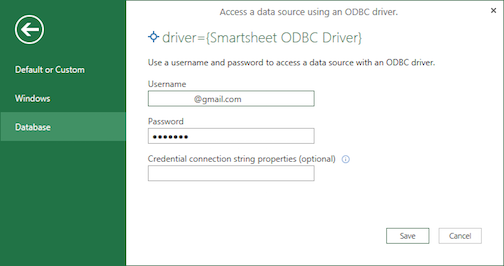
FAQ
The following questions are answered in this section:
- Why am I seeing this error - “Unexpected error”, when expanded says that “ODBC is not enabled for your account”?
- My date columns contain mixed milestone names (text) and dates, but on import into Tableau all text data is lost. How can I see this information?
- Does my Smartsheet data need to be formatted in a certain way to be compatible with Tableau?
- When I use Tableau Desktop, why do I have to re-enter my Smartsheet credentials every time I re-open Tableau?
- Why am I getting an “invalid username or password” error when trying to re-open a previously saved Tableau Desktop workbook?
- What is the max number of tables that the Smartsheet Live Data Connector will support in a join?
- What SQL dialect does the Smartsheet Live Data Connector support?
- Why doesn’t Tableau’s Fiscal Calendar Start functionality work correctly?
- I tried publishing a Smartsheet-based Workbook and got a message that the functions TODAY() and NOW() will work differently because the server and Smartsheet are in the different timezones.
- My Smartsheet data does not appear to refresh on Tableau Server.
- I am seeing “Tableau identified limitations…” warning message.
- How do I get Excel to Auto-Refresh Smartsheet Data?
- I am getting an error message trying to configure or delete a DSN - “The setup routines for the … could not be found. Please reinstall the driver.”
- I am getting an error message when attempting to open a saved workbook - “Invalid username or password for data source”
Why am I seeing this error - “Unexpected error”, when expanded says that “ODBC is not enabled for your account”?

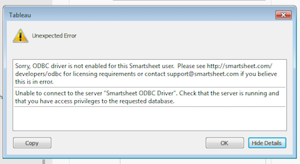
This is because ODBC access has not been enabled for your Smartsheet account. Please see the Requirements section to ensure your account is eligible to use the Live Data Connector.
My date columns contain mixed milestone names (text) and dates, but on import into Tableau all text data is lost. How can I see this information?
Date and Time columns have a storage class of text in the Live Data Connector. This means that they are plain text strings until imported into Tableau or other ODBC applications. If you wish to see the non-date/time content of these columns, you must modify the Tableau column type prior to import. You can do this by a right clicking on the calendar icon in the Tableau table selection screen and selecting the String type. All cell contents will now be displayed as raw, unformatted text.

Does my Smartsheet data need to be formatted in a certain way to be compatible with Tableau?
Spreadsheet data may require some formatting to work with Tableau. Tableau has created a guide for Excel users, and much of it apply to Smartsheet as well because of similarities in how data may be structured in Excel and Smartsheet. See Preparing your Excel data for Tableau knowledge base article.
When I use Tableau Desktop, why do I have to re-enter my Smartsheet credentials every time I re-open Tableau?
Tableau Desktop does not save user login credentials by design, as a security precaution. It is a feature of Tableau Desktop, not a feature of the Smartsheet Live Data Connector. To re-open previously saved Tableau Desktop workbooks, see this section.
Why am I getting an “invalid username or password” error when trying to re-open a previously saved Tableau Desktop workbook?

Please see this FAQ item.
What is the max number of tables that the Smartsheet Live Data Connector will support in a join?
The Smartsheet Live Data Connector will support up to 64 tables (sheets) in a single join.
What SQL dialect does the Smartsheet Live Data Connector support?
The Smartsheet Live Data Connector uses an implementation of SQLite to locally store and query Smartsheet sheets and reports. As such, the Live Data Connector can interpret native SQL as understood by SQLite. The SQL syntax used by SQLite is well documented on the SQLite website: https://www.sqlite.org/lang.html. In addition to the SQLite core functions https://www.sqlite.org/lang_corefunc.html, the Live Data Connector also supports a variety of functions which expose sheet, column and cell metadata through native SQL. Those functions are described above.
Why doesn’t Tableau’s Fiscal Calendar Start functionality work correctly?
Any time I select a different fiscal year start month, it loses the year and quarter data for any month after the start month, through the end of the calendar year. For example, if I choose August as the start of the fiscal year, the months of August through December show Null values for year and quarter. January through July, however, show up correctly.
When communicating with the Smartsheet Live Data Connector, Tableau expects (as an example) that if you ask for the 15th month of 2014 that the Connector will return a date of the 3rd month of 2015. The Connector’s date function, however, sees the 15th month as a bad value and returns NULL instead. To work around this limitation, create a calculated field in Tableau:
- Right click anywhere in the Data pane and select Create Calculated Field
- Let’s call it FY Order Date
- In the Functions column select
RAWSQL_DATE - Then in the Formula window type
RAWSQL_DATE("date(%1, '+6 month'), [Order Date]), whereOrder Dateshould be replaced with the name of the date column you will use from your table.
In this example the Fiscal Year starts on July 1st - hence ’+6 month’. If your Fiscal Year starts on a different month, you would need to adjust accordingly. For instance, if it starts in March, your calculation should say ‘+2 month’.
The result should look like this:
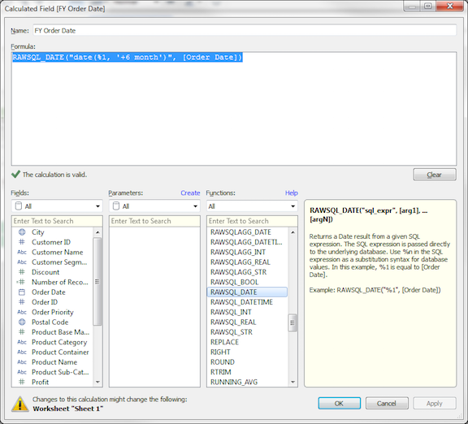
I tried publishing a Smartsheet-based Workbook and got a message that the functions TODAY() and NOW() will work differently because the server and Smartsheet are in the different timezones.
Tableau appears to be returning incorrect information when executing the NOW() function, and there appear to be a number of online forum posts confirming this.
Luckily, as with DATEADD and DATEDIFF we can modify these calculations to return UTC or local time. The NOW() UTC function is RAWSQL_DATETIME("datetime('now')"). And the NOW() local time function is RAWSQL_DATETIME("datetime('now', 'localtime')").
The way most other Tableau users address this is by picking a common time zone and modifying the calculations to always use that time zone. Our recommendation is to replace NOW() with your own function that returns UTC if you need to be consistent across time zones (all other Smartsheet dates will also get returned in UTC).
My Smartsheet data does not appear to refresh on Tableau Server.
There is a known issue with Tableau Server prior to version 8.3.3 where the manual refresh (using F5) does not refresh any data from Smartsheet. The issue has been addressed in Tableau Server 8.3.3.
I am seeing “Tableau identified limitations…” warning message.
The Smartsheet Live Data Connector comes with a Tableau configuration file designed to optimize the Tableau integration experience. The file gets installed into C:\My Documents\My Tableau Repository\Datasources directory and is called “smartsheet.tdc”.
If for some reason Tableau is not able to find this file, you will see the following warning:
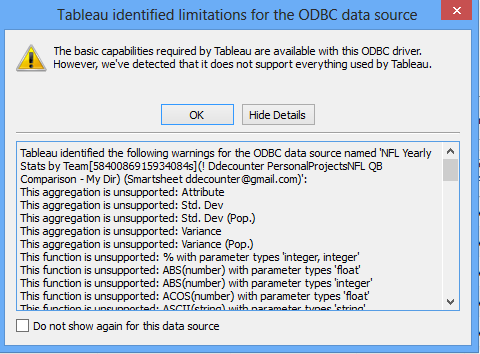
This may happen for one of two reasons:
The Smartsheet Live Data Connector was installed before Tableau was installed, so the .tdc file was never copied to the Tableau directory because it didn’t exist at the time.
Both 32-bit and 64-bit Connectors were installed and then one of them was uninstalled, removing the .tdc file.
In both instances, the solution is to uninstall your Smartsheet Live Data Connector(s) and do a clean install of the Connector, insuring that the .tdc file is now installed into the Tableau directory.
How do I get Excel to Auto-Refresh Smartsheet Data?
To start, navigate to Data > Refresh All > Connection Properties…
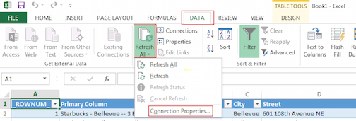
After that, a dialog will open with several settings for refreshing. After you’ve finished setting the options to your liking, click OK:
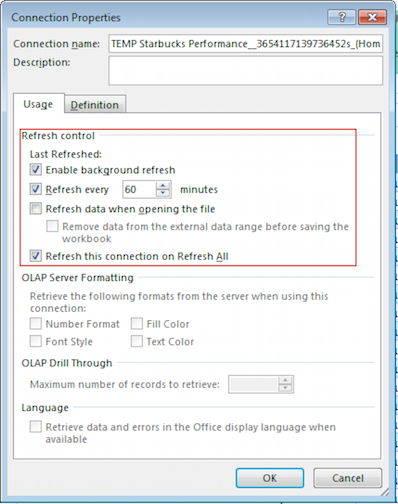
I am getting an error message trying to configure or delete a DSN - “The setup routines for the … could not be found. Please reinstall the driver.”
If you removed the Live Data Connector from your computer, or have upgraded it from version 1.0.20.3 (or earlier when it used to be called Smartsheet ODBC Driver), but still have Data Source Names (DSNs) set up with the old driver, you will not be able to configure or delete them.
When you attempt to configure or delete a DSN set up for an ODBC driver that has been removed from your computer, you will receive the following error message:
Please follow the instructions described in this online post to remove any references to the old driver.
First, click Start, type regedit and launch the Windows registry editor:
If your DSN is a user DSN (most likely) configured for a 64-bit driver, navigate to HKEY_LOCAL_MACHINE\SOFTWARE\ODBC\ODBC.INI and delete the data source key under ODBC.INI and the entry under ODBC.INI\ODBC Data Sources:

I am getting an error message when attempting to open a saved workbook - “Invalid username or password for data source”
This error is likely caused by character limitations in Tableau. Because of the way data is passed in Tableau when a workbook is re-opened, the following characters cannot be used in your password:
{} ; =
If you have any of these characters in your password, you will need to change it and remove them.